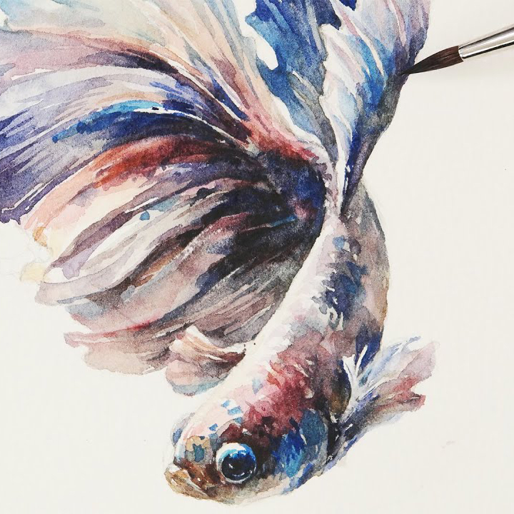

Since I was little, I have taken different art classes, which helped me discover my love of painting, especially watercolor. My mother also had an artistic background and painted when she was younger, which influenced me. Since she saw my interest from a young age, she decided to enroll me in painting, sculpting, etc. I always looked through her sketchbooks and asked her to show me all of her artwork when I was younger, which was very inspiring. I knew then that I wanted to learn to paint like her.
 In high school, I had a great art teacher who encouraged me to refine my skills and ultimately led me to fall in love with my hobby even more. What I enjoy painting the most is still life, and I like to create my compositions with anything I have at home and replicate it on a page. When I paint, it also serves as therapy and helps me disconnect from everything. I don't do it as often as I used to, but I can paint for hours when I feel inspired.
I also enjoy doing portraits. My first experience was back in high school. My teacher worked with a non-profit organization that helped refugee children who had recently lost their families. They teamed up with different high schools by sending pictures of the children to be replicated in any artistic style by students so each child would have a memento of themselves. After receiving their portrait, the organization would also send back a picture (which I still have) of each child holding their portrait; to this day, it is my most cherished work.